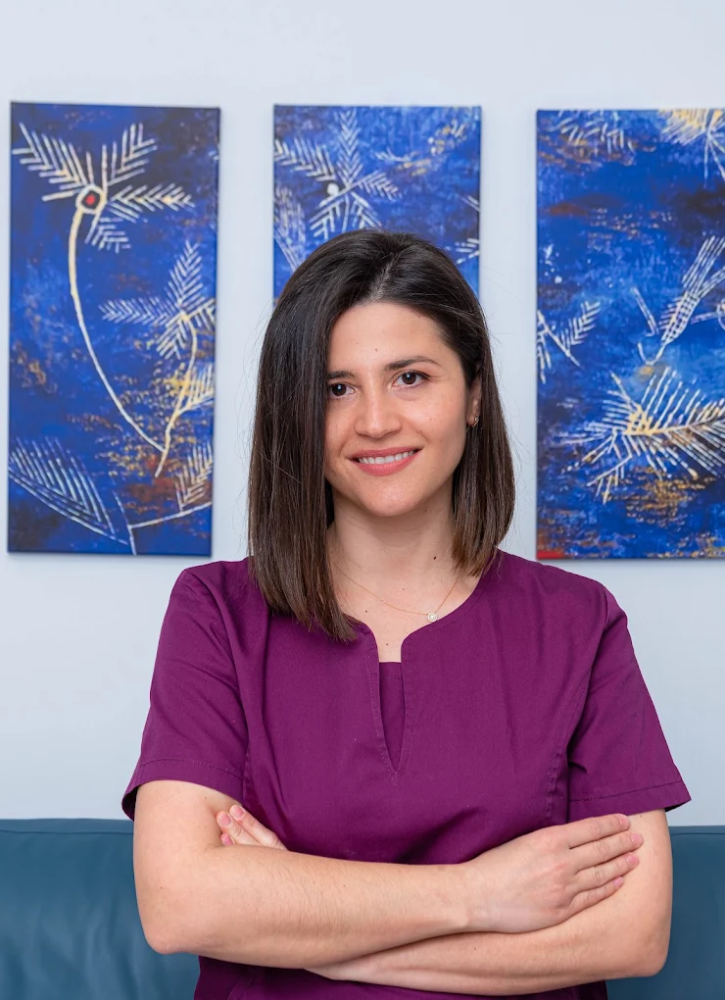

Η γιατρός
Βιογραφικό και καριέρα
Η Μπάμπη Στέλλα DDS είναι Οδοντίατρος - Προσθετολόγος, με μεταπτυχιακή εκπαίδευση στην Προσθετική στο Εθνικό και Καποδιστριακό Πανεπιστήμιο Αθηνών και πολυετή κλινική εμπειρία σε Αθήνα και Κρήτη.

01 / Σπουδές
Σπουδές
-
2014
Μεταπτυχιακός τίτλος στην Προσθετική, Οδοντιατρική Σχολή, Εθνικό & Καποδιστριακό Πανεπιστήμιο Αθηνών.
-
2006 - 2012
Πτυχίο Οδοντιατρικής, Οδοντιατρική Σχολή, Εθνικό & Καποδιστριακό Πανεπιστήμιο Αθηνών.
02 / Εμπειρία
Επαγγελματική εμπειρία
- 2021 - Σήμερα
Οδοντίατρος - Προσθετολόγος, Ιδιωτικό Ιατρείο.
- 2017 - 2021
Οδοντίατρος - Προσθετολόγος, Εξειδικευμένα Οδοντιατρεία & Κλινικές σε Αθήνα & Κρήτη.
- 2014 - 2017
Οδοντίατρος, Εξειδικευμένο Προσθετολογικό Οδοντιατρείο & Κλινική.
- 2013 - 2014
Βοηθός Οδοντιάτρου, Εξειδικευμένο Προσθετολογικό Οδοντιατρείο.
- 2012 - 2013
Οδοντίατρος, Ιδιωτικό Οδοντιατρείο.
- 2012 - 2013
Βοηθός Ογκολόγου, Ιδιωτική Κλινική, Κεντρική Κλινική Αθηνών.
- 2009 - 2011
Βοηθός Οδοντιάτρου, Γναθοχειρουργικό Ιατρείο.
- 2010 - 2011
Εθελοντική παρακολούθηση & συμμετοχή σε εφημερίες, Γενικό Νοσοκομείο Αθηνών "Ευαγγελισμός".
03 / Σύλλογοι
Μέλος συλλόγων
-
2016 - Σήμερα
Διεθνής Ομάδα Εμφυτευματολογίας, International Team for Implantology.
04 / Συνέδρια
Συμμετοχή σε συνέδρια
- 2016
Προσθετικές επιπλοκές ακίνητης επιεμφυτευματικής προσθετικής αποκατάστασης στην κάτω γνάθο, παρουσίαση κλινικού περιστατικού, 36ο Πανελλήνιο Οδοντιατρικό Συνέδριο, Αθήνα.
- 2016
Αποκατάσταση ελλείματος άνω γναθεκτομής, παρουσίαση 2 κλινικών περιστατικών, Οδοντοστοματολογική Έρευνα 70 χρόνια επετειακό συνέδριο, Αθήνα.
- 2016
Prosthetic complication of an implant supported fixed dental prosthesis on the mandible, a case report, 25th Annual Scientific Meeting of European Association for Osseointegration, Paris.
- 2016
Οδοντοστοματολογική Έρευνα, 70 χρόνια επετειακό συνέδριο, Αθήνα.
- 2016
25th Annual Scientific Meeting of European Association for Osseointegration, Paris.
- 2016
9th International Athens Dental Symposium - Omni congresses, Αθήνα.
- 2016
1η Διημερίδα Εμφυτευματολογίας, HOAMS 2016, Αθήνα.
- 2016
Διάλεξη & hands-on με θέμα “Ολοκεραμικές Όψεις: Σχέδιο Θεραπείας, Παρασκευές, Προσωρινά και Συγκόλληση”.
- 2016
Πρακτική επίδειξη και τοποθέτηση εμφυτεύματος στα πλαίσια σεμιναρίου της εταιρίας Strauman με τίτλο “Τοποθέτηση Μονήρους Εμφυτεύματος στην Αισθητική Περιοχή”.
- 2015
39ο Annual Conference Of The European Prosthodontic Association - EPA, Prague.
- 2015
Restore a lateral incisor with BioHPP resin bonded retained bridge, 39ο Annual Conference Of The European Prosthodontic Association - EPA, Prague.
- 2014
Κρίσιμα σημεία κατά την διαδικασία του καταρτισμού του σχεδίου θεραπείας της προσθετικής αποκατάστασης, 51ο Συνέδριο Στοματολογικής Εταιρείας της Ελλάδος, Βόλος.
- 2014
Η σημασία του ιατρογενούς σφάλματος στην επανορθωτική οδοντιατρική, 51ο Συνέδριο Στοματολογικής Εταιρείας της Ελλάδος, Βόλος.
- 2014
Ivocral Vivadent Seminar, Large composite restorations in the posterior region, Lecturer: Dr. Marcus Lenhard.
- 2014
Ivocral Vivadent Seminar, Παρασκευές, αποτύπωση & συγκόλληση στις ολοκεραμικές αποκαταστάσεις, ομιλητής Κωνσταντίνος Τσούτης - Προσθετολόγος.
- 2014
Ivocral Vivadent Seminar, Σύγκλειση, Κάθετη διάσταση & προσθετικός χώρος, ομιλητής Κωνσταντίνος Τσούτης - Προσθετολόγος.
- 2014
Πρακτικό σεμινάριο Καρδιοπνευμονικής Αναζωογόνησης σε ενήλικες & παιδιά, ΚΑΡΠΑ.
- 2014
Διαχρονικές Αξίες - Νέες Τεχνολογίες, Συνέδριο Ελληνικής Προσθετικής Εταιρείας.
- 2014
51ο Συνέδριο Στοματολογικής Εταιρείας της Ελλάδος, Βόλος.
- 2014
Ο στοματοπροσωπικός πόνος, κοινό σημείο συνάντησης οδοντιατρικών και ιατρικών ειδικοτήτων, Οδοντιατρικός Σύλλογος Αθηνών.
- 2014
Πρώτες βοήθειες στο ιατρείο, Οδοντιατρικός Σύλλογος Αθηνών.
- 2014
Πρακτική επίδειξη τοποθέτησης εμφυτεύματος στα πλαίσια σεμιναρίου εταιρίας με τίτλο “Πρακτικό Σεμινάριο Εμφυτευμάτων τύπου Xive”.
- 2014
Πρακτική επίδειξη τοποθέτησης εμφυτεύματος στα πλαίσια σεμιναρίου εταιρίας με τίτλο “Πρακτικό Σεμινάριο Εμφυτευμάτων τύπου Astra”.
- 2014
Πρακτική επίδειξη τοποθέτησης εμφυτεύματος στα πλαίσια σεμιναρίου εταιρίας με τίτλο “Πρακτικό Σεμινάριο Εμφυτευμάτων τύπου Mis”.
- 2014
Πρακτική επίδειξη τοποθέτησης εμφυτεύματος στα πλαίσια σεμιναρίου εταιρίας με τίτλο “Πρακτικό Σεμινάριο Εμφυτευμάτων τύπου Nobel”.
- 2013 - 2014
Επιστημονικός Συνεργάτης, Εργαστήριο της Ακίνητης Προσθετικής, Προπτυχιακό Πρόγραμμα Σπουδών, 4ο εξάμηνο, Οδοντιατρική Σχολή. Υπεύθυνος εργαστηρίου: Γούσιας Ηρακλής, Επίκουρος Καθηγητής.
- 2013
Ψηφιακή διαχείριση οδοντιατρείου, Οδοντιατρικός Σύλλογος Αθηνών.
- 2013
Η πληροφορική στην οδοντιατρική του σήμερα, Πανελλήνιο Οδοντιατρικό Συνέδριο.
- 2013
Κλινικές εκδηλώσεις στη στοματική και γναθοπροσωπική χώρα που υποκρύπτουν νεοπλασματική ή συστηματική νόσο, Οδοντιατρικός Σύλλογος Αθηνών.
- 2013
Πόνος: Διαγνωστική και θεραπευτική προσέγγιση, Οδοντιατρικός Σύλλογος Αθηνών.
- 2012
Συντηρητική αντιμετώπιση και αξιοποίηση δοντιών με εκτεταμένη απώλεια οδοντικής ουσίας, Οδοντιατρικός Σύλλογος Αθηνών.
- 2009
29ο Πανελλήνιο Οδοντιατρικό Συνέδριο, Ιωάννινα.
- 2009
36ο Πανελλήνιο Οδοντιατρικό Συνέδριο, Αθήνα.